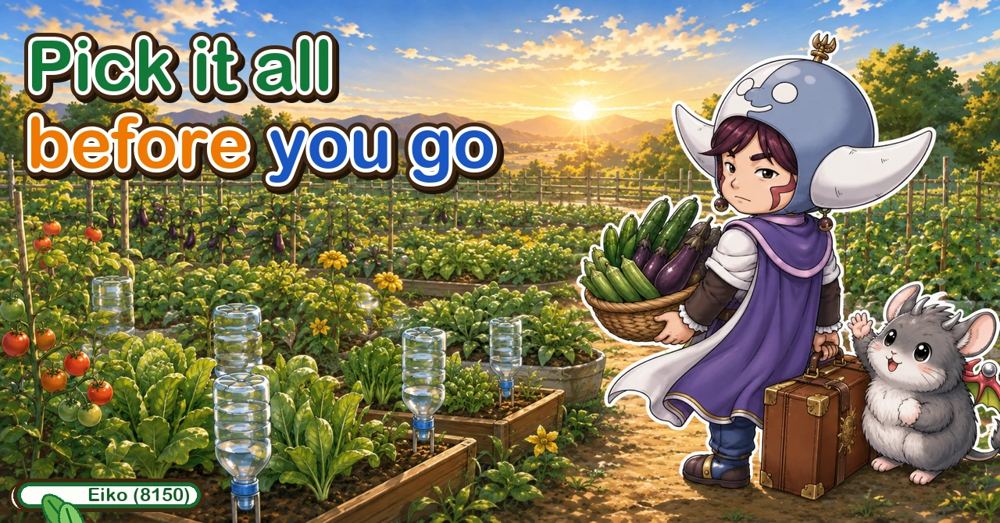
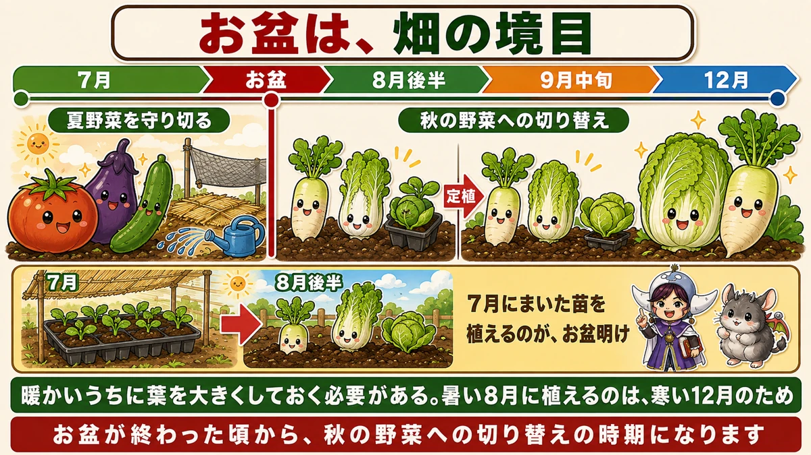
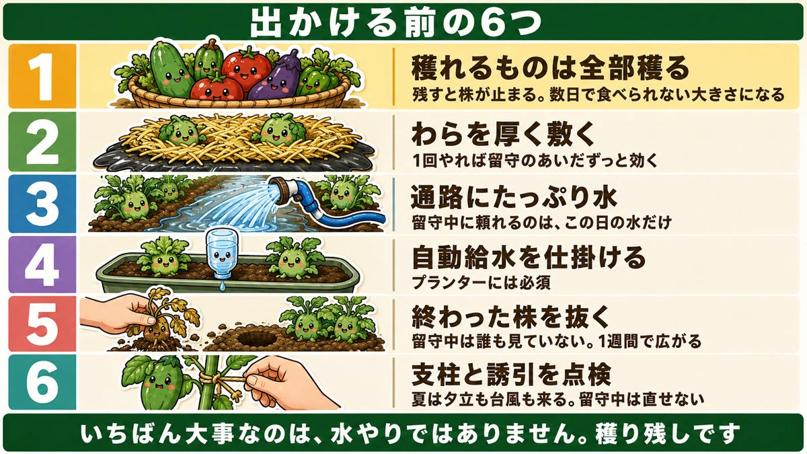
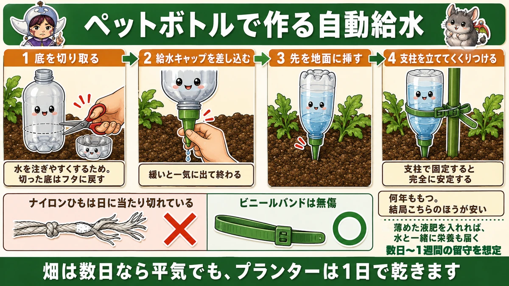
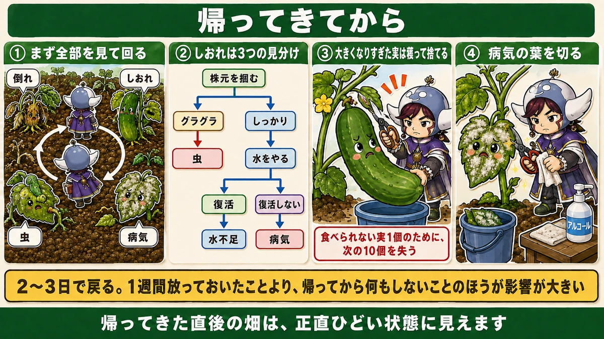

Pick everything before you go 🏖️ Leave fruit on and the plant stops

🗨️ "We're away for a week — what do I do about the garden?"
🗨️ "I left it seven days and came back to a disaster."
🗨️ "Can I just ask someone to water it?"
Hello, I'm Eiko. Eight years of growing vegetables organically and without pesticides, and a teaching licence in science.
The point, up front:
Before you go, pick everything that's pickable.
The most important thing is not the watering. It's what you leave on the plants ☺️
Midsummer is the hinge of the year

What this diagram says （図解の文字）
- Midsummer is the garden's hinge
- Carrying the summer crops through ／ switching to the autumn crops
- Planting out — the plants sown a month earlier go in just after midsummer
- They need to build their leaves while it's warm. Planting in the heat is for the cold of winter
Up to midsummer, the job is carrying the summer crops through the heat.
After it, the cast changes — the autumn and winter crops start.
Winter brassicas start in the heat
Mooli, Chinese cabbage, cabbage: they are started from late summer into early autumn.
"While it's still this hot?" — yes, for a reason. They have to make their leaves while it's warm.
Start once it's cool and the plants never bulk up. Go into winter with small leaves and the cabbage won't heart and the mooli won't thicken.
Planting in August heat is work done for December.
And the plants you sowed in the shade a month earlier? Just after midsummer is when they go in.
Six things before you leave

What this diagram says （図解の文字）
- Six things before you go
- 1 pick everything pickable — left on, the plant stops; and it's inedible within days
- 2 lay straw thickly — do it once and it works the whole time you're away
- 3 soak the paths — the only water you can rely on is the water you give that day
- 4 set up automatic watering — essential for containers
- 5 pull the finished plants
- 6 check the canes and ties
1. Pick everything
Even if it's slightly early, take it all. Two reasons.
Fruit left on stops the plant. It concludes it has reproduced and doesn't open the next flowers. A week of fruit left on is a week's delay to the next harvest.
And it will be inedible anyway. Cucumbers, okra, courgettes go past eating in days — okra hardens in two or three. A week away and none of it is food. Better to take it small.
2. Lay straw thickly
Thicker than you normally would. It lowers soil temperature, reduces evaporation and stops soil splash — and one application works the entire time you're away. It's exactly the right kind of job for a period you can't intervene in.
3. Soak the paths
On the morning you leave, water heavily — on the paths, not at the base of the plants, because the active root tips are out under the paths.
About ten minutes in each spot, until it pools. The only water you can rely on while you're away is the water you give that day.
4. Set up automatic watering
Essential for containers. See below.
5. Pull the finished plants
A plant that has stopped cropping becomes a mildew reservoir — and while you're away nobody is watching. A week is plenty for it to reach the neighbouring plants. Pull them before you go.
6. Check canes and ties
Summer brings storms, and you can't fix anything from 300 miles away.
- retie anything that's loosened
- loosen anything that's gone tight
- add a cane to anything likely to go over
Loose on the plant, tight on the cane — just check it.
Containers are the danger
Plainly: open ground copes for a few days. A container dries out in one.
- limited volume of compost
- roots can't escape outward
- water drains straight out of the bottom
There's no reservoir lower down the way there is in a bed.
So the priority is clear: if you set up one watering system, set it up for the containers. Beds with straw and a good soak will hold for days. Containers won't.
A bottle waterer

What this diagram says （図解の文字）
- An automatic waterer made from a plastic bottle
- 1 cut the base off — so you can fill it easily; put the cut base back on as a lid
- 2 push in a drip cap — loose and it empties in one go
- 3 push the tip into the soil
- 4 put a cane in and tie the bottle to it — fixed to a cane it's completely stable
- Nylon string degrades in sunlight…
Four steps
1. Cut the base off the bottle. Not for drainage — so you can fill it from the top instead of through the neck. Put the cut-off base back on as a lid, which keeps debris and mosquito larvae out.
2. Push a drip cap into the neck. Garden centres sell them. Push it in firmly — loose, and the whole bottle empties at once.
3. Push the tapered tip into the soil.
4. Put a cane in beside it and tie the bottle on. Pushed into the soil alone, it blows over. Tied to a cane it's completely stable.
It works for liquid feed too
Fill it with dilute liquid feed and the plant is fed slowly over the whole period. Water and nutrition arriving together while you're away — for a longer absence, this is what makes the difference.
When you get back

What this diagram says （図解の文字）
- After you get back
- ① walk round and look at everything — fallen ／ wilting ／ insects ／ disease
- ② wilting has three tests — grip the base: loose → insects; firm → water it; recovers → thirst; doesn't → disease
- ③ pick the oversized fruit and throw it away — one inedible fruit costs you the next ten
- ④ cut off the diseased leaves
1. Walk round first
Put the bags down and do a circuit. Look for four things: fallen plants, wilting plants, insects, disease. A week of change arrives at once; deal with it in order.
2. Wilting: three tests
- Grip the base and rock it → loose means insects
- If it's firm, water it
- Recovers → it was thirsty. Doesn't → it's disease
Three moves and you have the cause. Do this before watering everything in a panic.
3. Pick the oversized fruit and bin it
Unpleasant, and necessary. Take off the fruit that's gone past eating.
It feels wasteful. Left on, the plant stays switched off.
One inedible fruit costs you the next ten. Be ruthless about this.
4. Cut the diseased leaves
Mildew usually spreads while you're away. Cut the affected leaves off — a leaf that's gone white isn't working anyway.
And disinfect the blade between plants.
It comes back in two or three days
A garden on the day you return looks genuinely awful. I think that every single time.
But pick, cut and water, and it's back within two or three days.
Leaving it for a week matters far less than doing nothing when you get home.
To sum up
- ✅ Pick everything before you go. The watering isn't the important part
- ✅ Fruit left on stops the plant flowering
- ✅ Cucumbers, okra and courgettes go past eating in days
- ✅ Midsummer is the hinge — the autumn crops start after it
- ✅ They must build leaves while it's warm; planting in heat is for the cold
- ✅ Six jobs: pick / straw / soak the paths / automatic watering / pull finished plants / check ties
- ✅ Straw works the whole time you're away from one application
- ✅ The only water you can count on is the water you give that day
- ✅ Containers dry in a day. Prioritise them
- ✅ Bottle waterer: cut the base, fit a drip cap firmly, push in, tie to a cane
- ✅ Plastic straps outlast nylon string by years
- ✅ Dilute liquid feed works in the bottle too
- ✅ Back home: walk round, test the wilting plants, bin the oversized fruit, cut diseased leaves
- ✅ Two or three days and it's back
You don't have to do all of it. Thirty minutes before you leave: pick everything, lay straw, soak the paths. That's most of the benefit 🏖️
Thank you for reading!